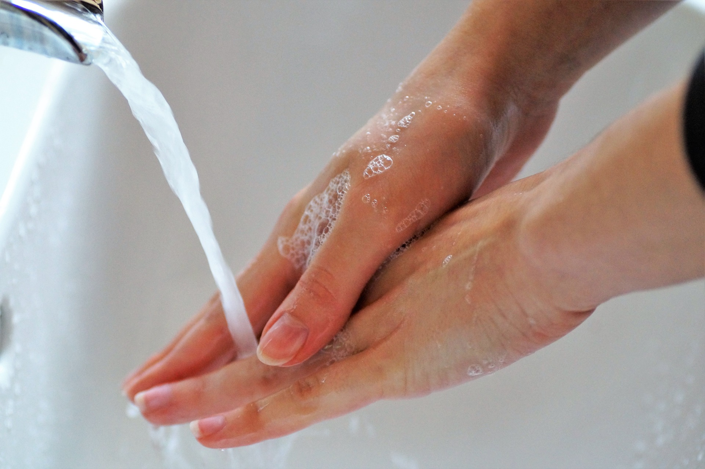
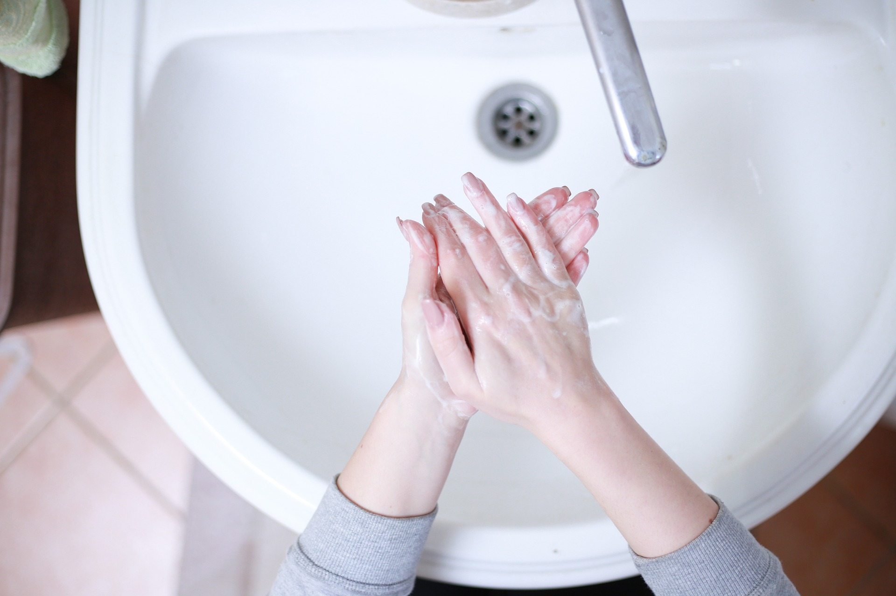
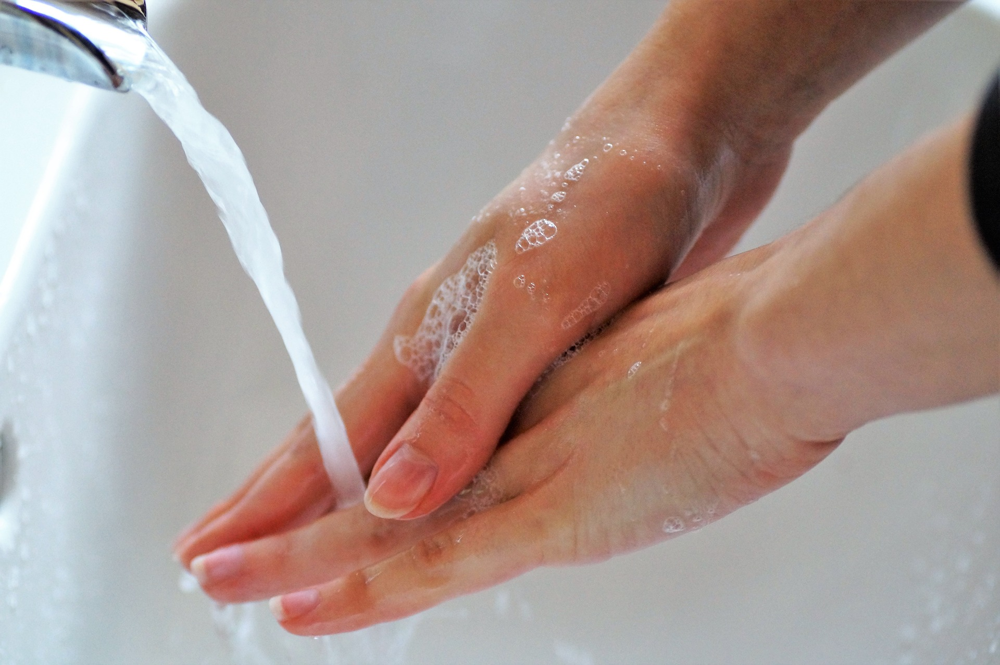
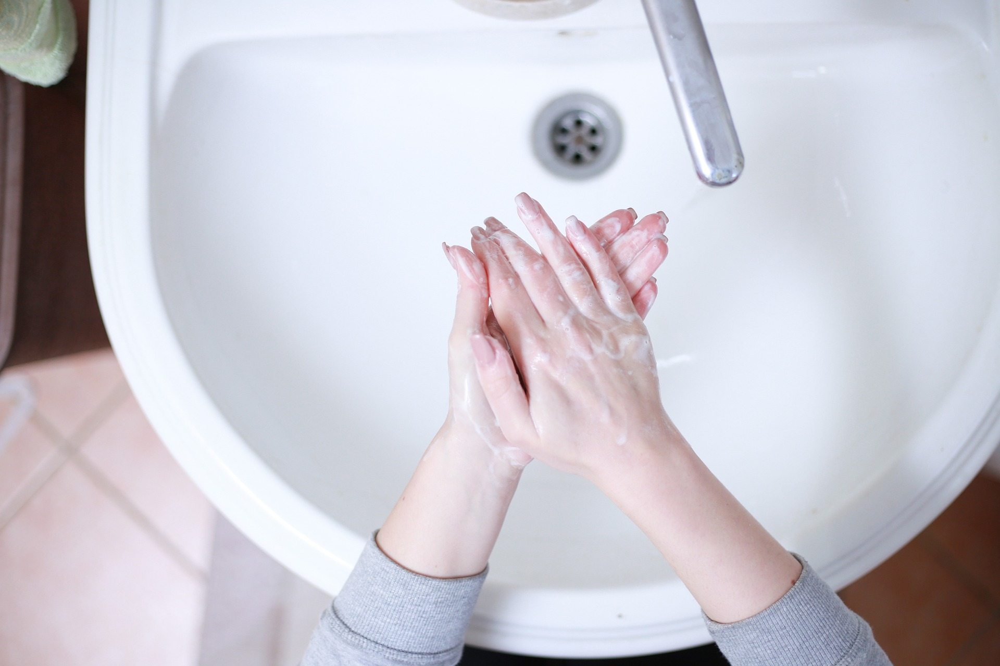

Introdução
 



A higienização das mãos é fundamental na enfermagem. Aqui estão alguns pontos-chave:
- ✅ Previne infecções.
- ✅ Garante segurança aos pacientes.
- ✅ É uma prática essencial em ambientes de saúde.
Manter as mãos limpas é crucial para o cuidado prestado.
Seguir as diretrizes de higienização protege tanto os pacientes quanto os profissionais.
A OMS enfatiza a importância dessa prática para a segurança do paciente.